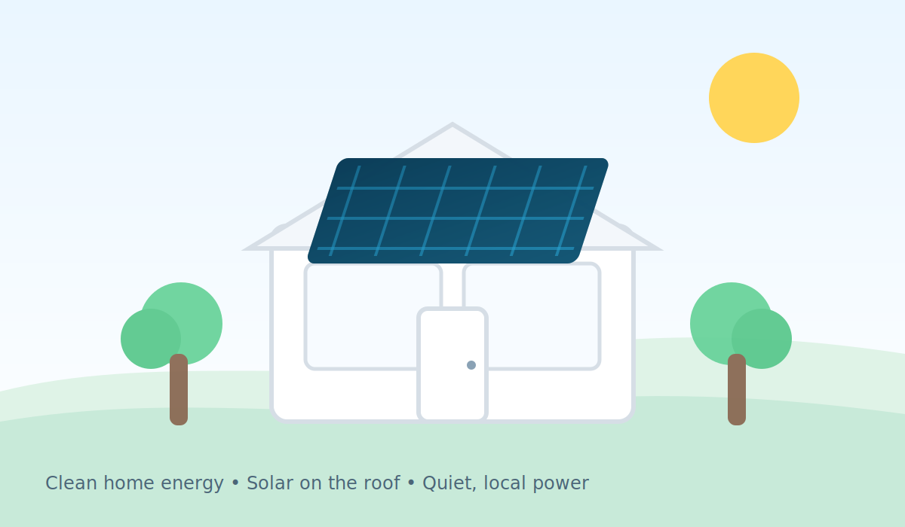

QUICK SELF-CHECK
Would a quick estimate help?
Yes
Not yet
Yes
Not yet
Yes
Not yet
Yes
Not yet
Yes
Not yet
Yes
Not yet
Yes
Not yet
Yes
Not yet
INVERTERS • MPPT • CLIPPING
Inverters: string vs micro vs optimizers
Your inverter choice determines how shading behaves, how monitoring works, and how failures are serviced.

Topology comparison
| Option | Pros | Tradeoffs |
|---|---|---|
| String inverter | Lower cost, fewer rooftop electronics. | Shading can reduce whole-string output; monitoring often less granular. |
| Microinverters | Panel-level MPPT, great for complex/shaded roofs, granular monitoring. | More rooftop electronics; service involves roof access. |
| Optimizers + string | Panel-level optimization with centralized inversion. | Still rooftop electronics; vendor lock-in can be a factor. |
Clipping is not automatically “bad”
Oversizing DC relative to AC can increase annual kilowatt-hour produced (up to a point) and improve economics, even if peaks clip on the best solar days.
Designers often target a DC/AC ratio around ~1.1–1.3 depending on climate and tariff.
Failure + service lens
- Ask about mean time to repair and warranty handling.
- Clarify monitoring alerting and response SLAs (if any).
- Understand how rapid shutdown is implemented.